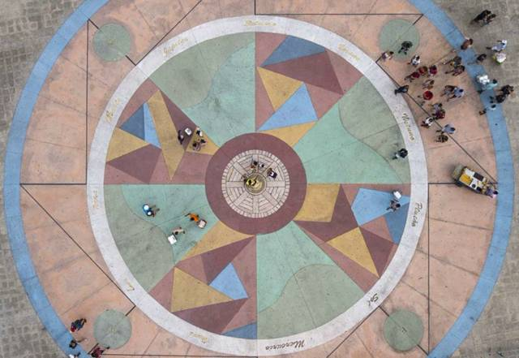
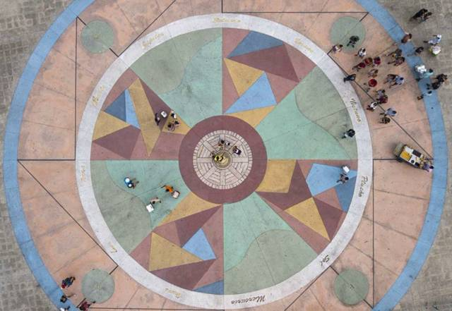

Praça do Marco Zero
A Praça Barão do Rio Branco, mais conhecida como Marco Zero, é um dos lugares mais simbólicos de Recife porque remete à fundação da cidade e aos tempos gloriosos da época colonial quando era um dos principais centros econômicos do país. A praça tem o nome original de Praça Barão do Rio Branco, todavia ficou conhecida como Praça do Marco Zero pelo fato de que nela encontra-se o quilometro zero das estradas de Pernambuco. Instalado no dia 31 de Janeiro de 1938 é formada por um marco de cor vermelha doado pelo Clube do Automóvel. Na lateral da praça encontra-se a estatua do Barão do Rio Branco em bronze, com 2,80m de altura, do escultor Felix Charpentier. Já no centro é possível ver a Rosa dos Ventos e sua frase “Eu vi o mundo… Ele começava no Recife” do pintor Cícero Dias. Nos períodos de momo a praça funciona como quartel general do carnaval multicultural do Recife.
 
